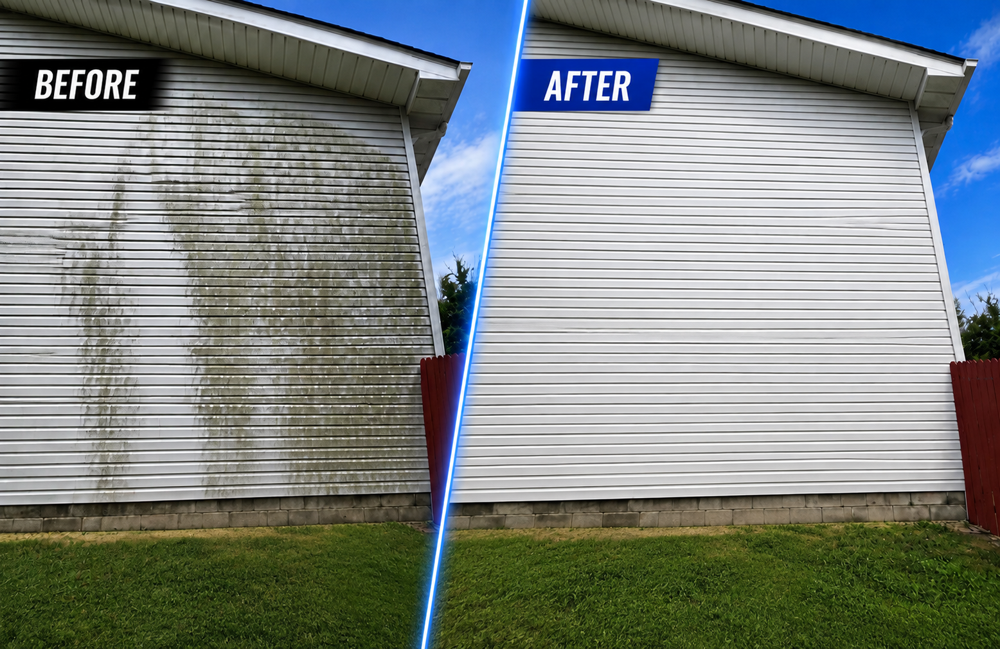
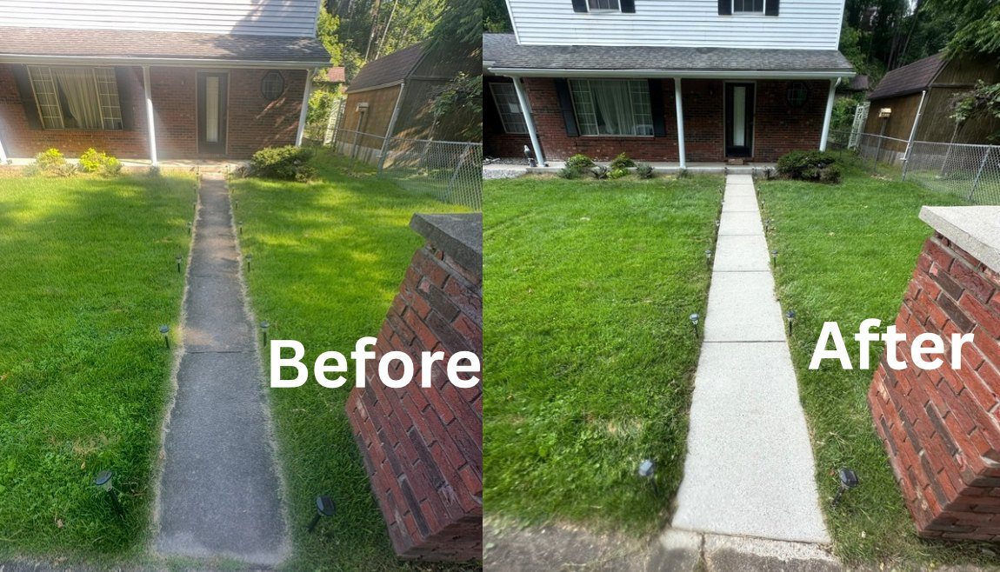
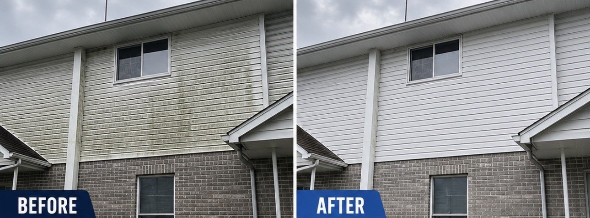
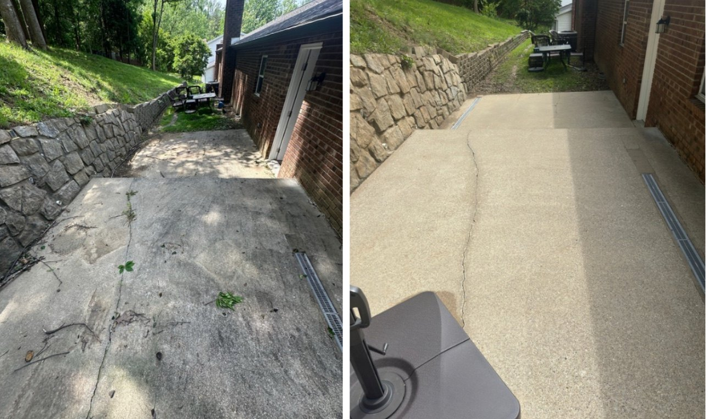
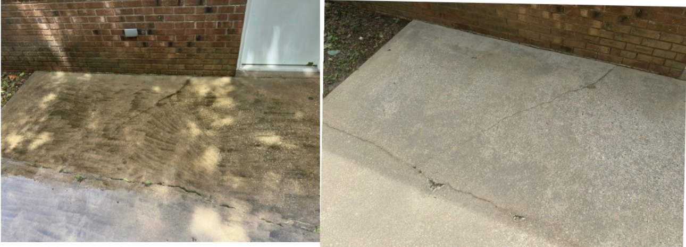
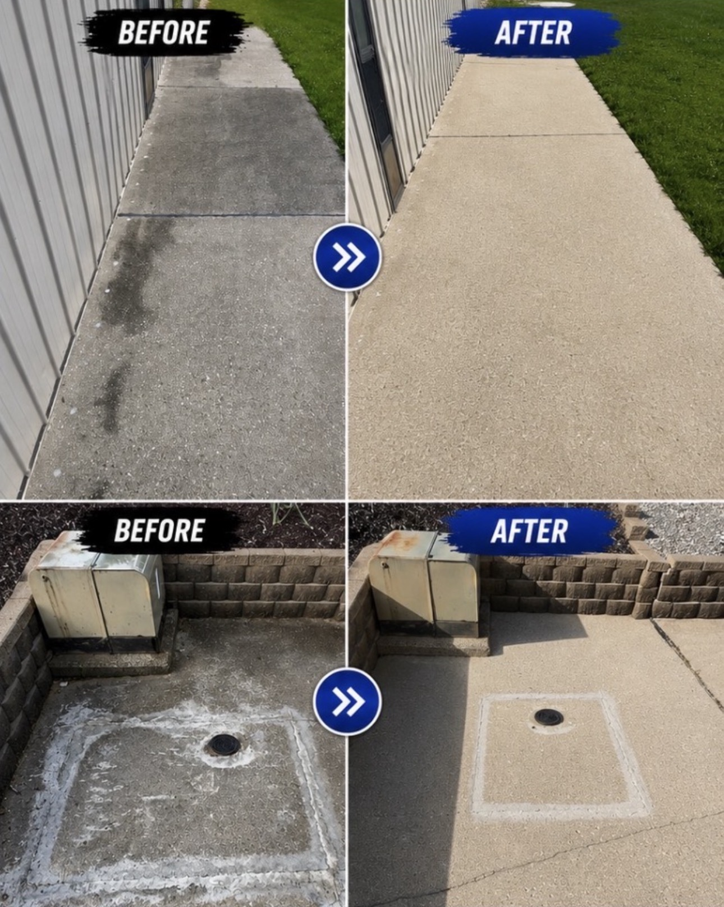
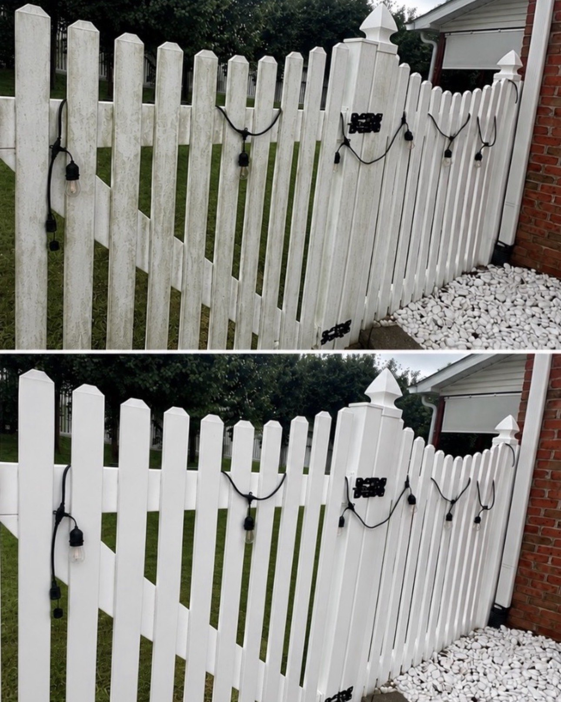
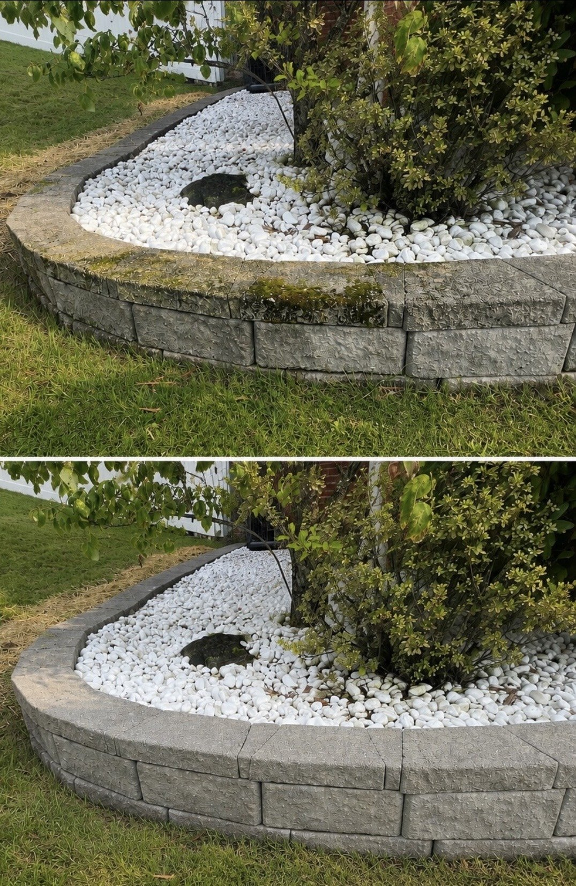
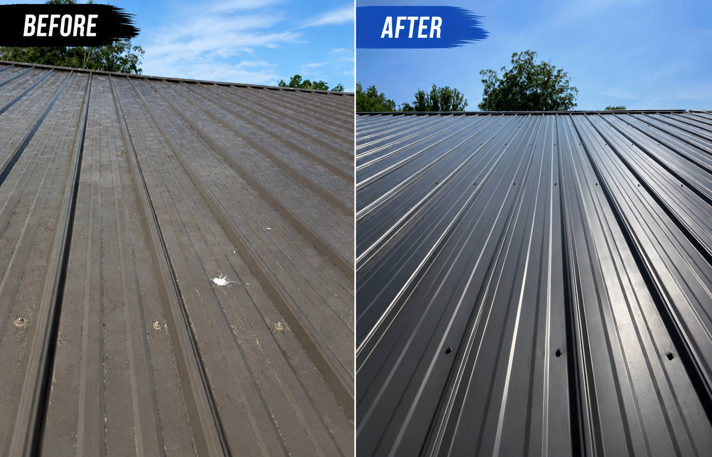
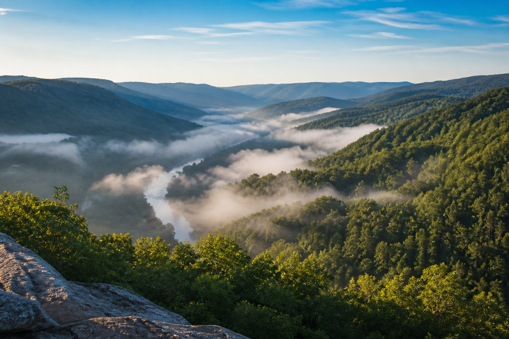

⌂
Soft washing
Gentle exterior cleaning removes algae, dirt, and buildup from siding and other sensitive surfaces.
Request house wash pricing →Pressure washing, soft washing and window cleaning in West Virginia
We provide pressure washing, house soft washing, roof cleaning, concrete cleaning, and clear exterior window cleaning with careful service and dependable communication.
Exterior cleaning services
Your property deserves the right approach. We select the equipment and cleaning method that best fits each surface.
Gentle exterior cleaning removes algae, dirt, and buildup from siding and other sensitive surfaces.
Request house wash pricing →Professional pressure washing refreshes concrete, patios, walkways, and other durable outdoor areas.
Request pressure washing pricing →Enjoy clearer exterior glass with one time cleaning or a convenient recurring service plan.
Explore window service plans →Exterior window service plans
Quarterly service offers our lowest price for each visit and keeps your windows looking their best throughout the year.
Stay ahead of pollen, water spots, and seasonal buildup while saving more on every cleaning.
Choose two visits during the year for convenient seasonal cleaning at a higher price for each visit.
Schedule one complete exterior window cleaning at our regular single visit price.
Quarterly customers receive our lowest price for each visit. Final pricing depends on property size, access, and window count. We confirm your price before scheduling.
A simple service process
Tell us where the property is, select the service you need, and share any useful details.
We confirm the work, answer your questions, and schedule a convenient time.
We work carefully, leave the area tidy, and give your exterior a noticeably cleaner appearance.
Completed projects
Real before and after results from properties cleaned by Blue Ridge Cleaning Co.

Clean residential siding in West Virginia

A brighter, cleaner front walkway

Heavy organic buildup carefully removed

Dirt and debris cleared from concrete

Built up grime lifted from the surface

Refreshed walkways and concrete surfaces

A clean, bright finish restored

Moss and discoloration carefully removed

Careful cleaning for metal roofing
Google customer reviews
Visit our Google Business Profile to read genuine feedback from customers who chose Blue Ridge Cleaning Co.
Read our latest Google reviews and learn what customers think about our communication, care, and results.
Read our Google reviews →Serving West Virginia and beyond
We serve Teays Valley, Hurricane, Milton, Charleston, Cross Lanes, most of West Virginia, and nearby states. Send us your location and we will let you know whether your property is within our service area.
Ask about your location →
Free quote with no obligation
Share a few details about your property. We will review your request and contact you with the next steps.
Service areaTeays Valley · Hurricane · Milton · Charleston · Cross Lanes · Most of West Virginia · Nearby states
Tell us which services you need, where the property is located, and how we should contact you. Most people finish the form in about two minutes.
The Microsoft form opens in a new tab. We will contact you after reviewing your request.